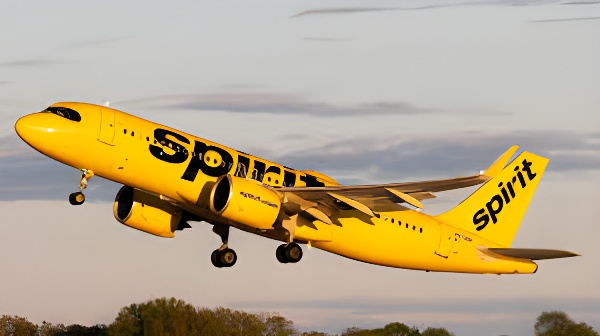

Le 2 mai 2026, Spirit Airlines a annulé l'ensemble de ses vols et cessé toutes ses opérations, devenant ainsi la première grande compagnie aérienne américaine à faire faillite pour des raisons financières depuis vingt-cinq ans. Après deux dépôts de bilan en moins de deux ans, des tentatives de fusion avortées et une spirale de pertes aggravée par la flambée des prix du carburant liée à la guerre en Iran, Spirit a mis fin à trente-quatre ans d'existence. Son effondrement soulève des questions fondamentales sur la viabilité du modèle ultra-low-cost et sur les responsabilités croisées des acteurs publics et privés dans la régulation du transport aérien.
Spirit Airlines trouve ses racines dans une société de transport par autocar du Michigan, fondée dans les années 1960. Des opérations aériennes charter débutent dans les années 1980 sous le nom Charter One, avant que la compagnie ne se rebaptise Spirit Airlines en 1992 et n'entame ses premières liaisons régulières entre Detroit et Atlantic City. Dans les années 2000, sous la direction de Ben Baldanza, Spirit opère une transformation radicale : elle adopte le modèle « Bare Fare », vendant des billets de base à prix plancher et facturant séparément chaque prestation additionnelle — bagage cabine, sélection de siège, boissons. Les tarifs de base sont alors de 30 à 40 % inférieurs à ceux des compagnies classiques, forçant ces dernières à créer leurs propres offres « basic economy ». En 2011, Spirit entre en Bourse sous le symbole SAVE et affiche des marges parmi les meilleures de l'industrie américaine.
Au faîte de sa croissance, Spirit exploite plus de 190 appareils Airbus de la famille A320, dessert 88 destinations aux États-Unis, dans les Caraïbes, au Mexique et en Amérique latine, et compte parmi les huit premières compagnies américaines par capacité de sièges offerts. Son modèle économique, fondé sur la densification des cabines et une tarification à la carte générant environ 50 % des recettes sous forme d'ancillaires, fait école dans le secteur.
La fragilité du modèle Spirit se révèle brutalement avec la pandémie de Covid-19. La compagnie accumule plus de 2,5 milliards de dollars de pertes entre début 2020 et son premier dépôt de bilan en novembre 2024. Plusieurs facteurs se conjuguent : l'effondrement de la demande loisirs post-pandémie, la hausse des coûts de main-d'œuvre, et surtout le rappel massif de moteurs Pratt & Whitney GTF en 2023, qui immobilise une large partie de la flotte Airbus A320neo de Spirit pendant de longs mois, générant des centaines de millions de pertes de recettes.
Parallèlement, les préférences des voyageurs évoluent. Les passagers à petit budget se montrent de plus en plus disposés à payer davantage pour un confort accru, sapant l'attractivité du modèle ultra-dépouillé de Spirit. Les grandes compagnies, ayant intégré des billets basiques dans leur offre, captent une clientèle autrefois acquise aux ultra-low-cost.
« Nous sommes fiers de l'impact de notre modèle ultra-low-cost sur l'industrie au cours des trente-quatre dernières années et espérions continuer à servir nos passagers pendant de nombreuses années encore. »
— Déclaration officielle de Spirit Airlines, 2 mai 2026En février 2022, Frontier Airlines annonce un projet de fusion avec Spirit pour 2,9 milliards de dollars. Quelques semaines plus tard, JetBlue Airways surenchérit avec une offre à 3,6 milliards, puis 3,8 milliards de dollars. Après une longue bataille judiciaire, le département de la Justice (DOJ) sous l'administration Biden obtient en janvier 2024 l'annulation de la fusion JetBlue-Spirit devant un tribunal fédéral, au motif que le rapprochement aurait nui à la concurrence sur le marché des billets bon marché. Le cours de l'action Spirit chute de 47 % dans la foulée. Les négociations avec Frontier reprennent en décembre 2024 mais n'aboutissent à rien.
La décision du DOJ sera au cœur des joutes politiques lors de la liquidation finale. L'administration Trump, par la voix du secrétaire aux Transports Sean Duffy, qualifie rétrospectivement ce blocage de « grave erreur » et en impute la responsabilité à l'administration Biden et à son prédécesseur Pete Buttigieg. Des voix libérales rappellent pourtant que l'administration Trump elle-même n'a pu empêcher l'effondrement de Spirit malgré les négociations sur un plan de sauvetage.
Spirit dépose son premier bilan en vertu du Chapter 11, avec des pertes annuelles de plus de 1,2 milliard de dollars — première grande compagnie aérienne américaine à procéder ainsi depuis 2011.
Un juge approuve un plan de réorganisation. Spirit supprime près de 4 000 postes et 200 liaisons non rentables, terminant l'année avec environ 7 500 employés actifs, dont 2 000 pilotes et 3 000 agents de bord.
Second dépôt de bilan (Chapter 11). Spirit déclare 8,1 milliards de dettes pour 8,6 milliards d'actifs. L'entreprise affiche un « doute substantiel » sur sa capacité à poursuivre ses activités.
Accord de restructuration conclu avec les créanciers, prévoyant une réduction de la dette et la poursuite des vols. Trois jours plus tard, la guerre en Iran fait exploser les cours du kérosène.
Spirit approche la Maison-Blanche pour un plan de sauvetage estimé à 500 millions de dollars. Trump se dit initialement ouvert à l'idée, mais un groupe clé de créanciers rejette la proposition finale. La trésorerie de Spirit s'épuise.
Spirit annule tous ses vols et cesse l'ensemble de ses opérations. Quelque 17 000 employés se retrouvent sans travail. Environ 1,8 million de sièges vendus pour le mois de mai seuls se trouvent annulés.
L'arrêt brutal de Spirit laisse des centaines de milliers de passagers sans solution immédiate. La compagnie indique que les billets payés par carte bancaire feront l'objet de remboursements, mais prévient que les miles de fidélité, bons et avoirs pourraient ne pas être honorés, leur sort devant être tranché par le tribunal des faillites. Les voyageurs en cours de déplacement doivent se rabattre en urgence sur d'autres compagnies à des tarifs walk-up — les plus élevés du marché. Spirit, qui assurait environ 2 % des vols domestiques américains, voit sa disparition provoquer une hausse structurelle des tarifs sur les routes qu'elle desservait.
La fin de Spirit referme un chapitre important de l'histoire du transport aérien américain. La compagnie avait démocratisé l'accès à l'avion pour des millions de passagers à revenus modestes, contraint les grandes compagnies à s'adapter et influencé la structure tarifaire de tout le secteur. Son effondrement rappelle que le modèle ultra-low-cost, fondé sur des marges infimes et une dépendance extrême au prix du carburant, ne dispose d'aucun amortisseur lorsque survient un choc exogène majeur. La question du rôle de l'État — régulateur de la concurrence hier, potentiel sauveteur aujourd'hui — reste entière : faut-il laisser le marché sanctionner les compagnies inefficaces ou protéger la connectivité des territoires et les emplois du secteur ? Spirit n'a pas obtenu de réponse à temps.
On May 2, 2026, Spirit Airlines cancelled all its flights and ceased operations entirely, becoming the first major U.S. airline to go out of business for financial reasons in twenty-five years. After two bankruptcy filings in less than two years, a string of failed mergers, and a spiral of losses compounded by soaring fuel prices triggered by the war in Iran, Spirit brought to a close thirty-four years of existence. Its collapse raises fundamental questions about the viability of the ultra-low-cost model and about the shared responsibilities of public and private actors in regulating the airline industry.
Spirit Airlines traces its roots to a Michigan-based trucking company founded in the 1960s. Air charter operations began in the 1980s under the name Charter One before the company rebranded as Spirit Airlines in 1992 and launched its first scheduled routes between Detroit and Atlantic City. In the 2000s, under CEO Ben Baldanza, Spirit underwent a radical transformation: it adopted the "Bare Fare" model, offering rock-bottom base fares while charging separately for every additional service — carry-on bags, seat selection, beverages. Base fares were 30 to 40 percent lower than legacy carriers, forcing them to introduce their own "basic economy" offerings. In 2011, Spirit went public under the ticker SAVE and posted margins among the best in the American industry.
At the height of its growth, Spirit operated more than 190 Airbus A320-family aircraft, served 88 destinations across the United States, the Caribbean, Mexico, and Latin America, and ranked among the eight largest U.S. carriers by seat capacity. Its business model, built on high-density cabins and à la carte pricing that generated roughly 50 percent of revenue as ancillary fees, became a blueprint for the sector.
The fragility of Spirit's model became starkly apparent with the Covid-19 pandemic. The company accumulated more than $2.5 billion in losses between early 2020 and its first bankruptcy filing in November 2024. Several factors converged: the collapse of leisure demand, rising labour costs, and above all the mass recall of Pratt & Whitney GTF engines in 2023, which grounded a substantial portion of Spirit's Airbus A320neo fleet for months at a time, generating hundreds of millions in lost revenue.
At the same time, passenger preferences were shifting. Budget travellers were increasingly willing to pay more for greater comfort, undermining the appeal of Spirit's stripped-back model. Legacy carriers, having integrated basic-economy fares into their offerings, were capturing passengers that had once flocked to ultra-low-cost carriers.
"We are proud of the impact of our ultra-low-cost model on the industry over the last 34 years and had hoped to serve our guests for many years to come."
— Official Spirit Airlines statement, May 2, 2026In February 2022, Frontier Airlines announced a $2.9 billion merger with Spirit. Within weeks, JetBlue Airways made a rival offer, ultimately reaching $3.8 billion. After protracted litigation, the Department of Justice under the Biden administration secured the annulment of the JetBlue-Spirit merger in January 2024, a federal judge ruling that the deal would have harmed competition in the budget travel market. Spirit's share price fell 47 percent in the aftermath. Talks with Frontier resumed in December 2024 but came to nothing.
The DOJ's decision became a flashpoint in the political debate surrounding Spirit's final liquidation. The Trump administration, through Transportation Secretary Sean Duffy, retrospectively called the blocking of the merger a "massive mistake" and laid responsibility at the feet of the Biden administration. Critics nonetheless noted that the Trump administration itself had been unable to prevent Spirit's collapse despite negotiations over a rescue package.
Spirit files its first Chapter 11 bankruptcy, citing annual losses exceeding $1.2 billion — the first major U.S. airline to do so since 2011.
A judge approves a reorganisation plan. Spirit cuts nearly 4,000 jobs and 200 unprofitable routes, ending the year with around 7,500 active employees, including 2,000 pilots and 3,000 flight attendants.
Second Chapter 11 filing. Spirit reports $8.1 billion in debts against $8.6 billion in assets and discloses "substantial doubt" about its ability to continue as a going concern.
A restructuring agreement is reached with creditors, envisaging debt reduction and continued operations. Three days later, the war in Iran causes jet fuel prices to skyrocket.
Spirit approaches the White House for a rescue package estimated at $500 million. Trump initially signals openness, but a key creditor group rejects the final proposal. Spirit's cash runs out.
Spirit cancels all flights and ceases all operations. Around 17,000 employees lose their jobs. Approximately 1.8 million seats sold for May alone are cancelled.
Spirit's sudden shutdown left hundreds of thousands of passengers stranded. The airline stated that tickets purchased by credit card would be refunded, but warned that loyalty miles, vouchers, and travel credits might not be honoured, their fate to be decided in bankruptcy court. Passengers already mid-journey had to scramble for seats on other carriers at last-minute "walk-up" fares — the most expensive in the industry. Spirit had operated roughly 2 percent of domestic U.S. flights; its disappearance has structurally pushed up fares on the routes it used to serve.
Spirit's demise closes an important chapter in American aviation history. The carrier had democratised air travel for millions of lower-income passengers, forced legacy carriers to adapt, and reshaped the fare structure of the entire industry. Its collapse serves as a reminder that the ultra-low-cost model, built on razor-thin margins and extreme sensitivity to fuel prices, offers no buffer when a major external shock strikes. The question of the state's role — competition regulator yesterday, potential rescuer today — remains unanswered: should markets be allowed to punish inefficient carriers, or should governments protect regional connectivity and industry jobs? Spirit never received a definitive answer in time.